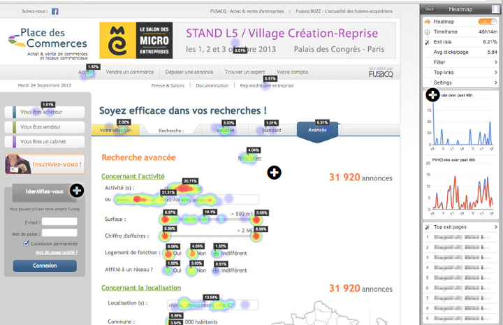
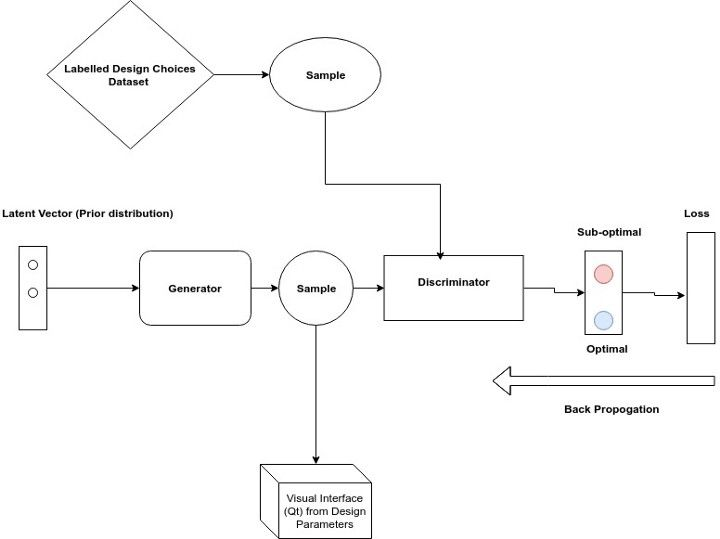

Building Adaptive Interfaces: Software 3.0
Andrew Ng predicted the impact Machine Learning would have on the way we develop software and where the community could be heading next. Could we use ML to make User Interactive Models smarter as well? Let's find out.
1/The rise of Software Engineering required inventing processes like version control, code review, agile, to help teams work effectively. The rise of AI & Machine Learning Engineering is now requiring new processes, like how we split train/dev/test, model zoos, etc.
— Andrew Ng (@AndrewYNg) 3 January 2019
Studying Machine learning has made me quite fond of labeling things and if I try to label how the paradigm of software development has changed over the years and what's ahead i would do it as follows:
-
Software 1.0 : Software to solve problems. Search Engine, Websites, OS, Security.
-
Software 2.0 : Software to help build and monitor software. Version Control, Cloud Services, Slack etc.
-
Software 3.0: Software that writes software. MLAS( Drag and drop Machine Learning as a Service), Adaptive User Interfaces/IDEs.
In this post, I would like to discuss more on Adaptive Software particularly the ones which are designed to be User Interfaces. Let's think of software with vast number of selection commands like PhotoShop, Adobe Premiere or Illustrator. Designing such interfaces and organising the layouts(drop downs) requires experienced UI Designers and involves lots of R & D man-hours in user studies. Fast forward a couple of million dollars, a few offshore teams and now we have a product that has all the right things: easy readability (through user studies), Hot key shortcuts, hierarchical layouts(alphabetic,semantic etc), clean graphics and hopefully doesn't clog up the RAM. (Looking at you Slack!)
Awesome right! but not really, think of this if all I want to do is to compile cat videos on Adobe Premiere or make memes on Photoshop why do I need this spatially optimised multi window 100 commands layout that has been designed considering an experienced user and would make me look at 5 drop downs to do something. Therefore for such products to cover a wider user base an adaptive or personalised interface makes sense. Basically an interface that adapts from what you do. Supervised Machine Learning has opened doors for massive personalised content in Streaming, E-Commerce and Advertisements and Adaptive User Interfaces should be the next obvious candidate.
We could divide the Adaptability task into three levels, each building on top of the other.
Level 1: Provide behavior analytics of user's click time, focus duration, heat-map of visual acuity, gaze locations etc. to aid in the design of the UI Menu layouts.
Heat Map Inc provides such analytics services as a Java Script wrapper to embed in websites and monitor user's mouse click movements.Pair it up with a visual eye tracker and you have yourself a Gaze analytics service to strategically design the layout or even to look for the premium spot for advertising in terms of visual acuity.

Level 2: Targeted Designs
The next step would be to form a cognitive model of the user behavior that could replicate how users would react(response time, visual acuity, focus) to changes in the UI. A simulator that would model different class of users(age,medical condition, motor skills) would allow targeted products for a demographic to be developed quickly(Parameter inference from prior data) without having to conduct user studies each time.
Level 3: Optimal UI Generator
Alright! so we simulated some users, saw what they do, now what! Well the next step is to move to generative models that would learn the intrinsic distribution(or produce samples from this distribution) between the optimal design choices of a interface. Say Something like Generative Adversarial Network which has shown promise in Vision where through a MinMax type optimization the Generator is able to synthesize samples from the original distribution.
In HCI, this would look something like this:
- A dataset indicating design choices(font size, color, window size,layout etc).
- The Input Parameters being a distribution encompassing various cognitive attributes of the user, some of which are explicitly stated( wears glasses, age) while others(motor skills, cognitive capacity, peripheral vision) not so explicit and would be inferred as the system interacts.
As an example, the Adaptive interface would intelligently design very different UIs for let's say our two users, Rick and Morty. Rick who is 38, has good vision, is a command line geek and prefers using Hot keys shortcuts would have very different personalised interface over Morty who is 23, wears glasses and is more efficient with touchpad gestures. The Adaptability therefore refers to being able to maximise Utility for individual users by observing their cognition Mechanism and generating a suitable Ecology(environment structure). (Terms defined in Payne et. al,2013)
The figure below shows a Generative model that would learn to sample from the distribution of the best design choices parameters.

In Part 2 of this series we would focus on the Level 2 Model i.e simulating the user. We would model the task of visually searching a Target item in the Menu. A Reinforcement learning agent would model the cognitive behaviour of the user to derive a rational strategy of searching the target item. Part 2: Visual Search